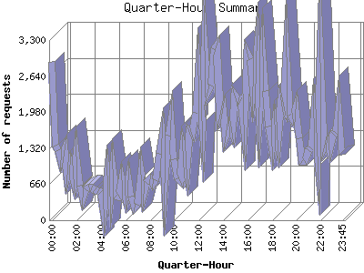

The Quarter-Hour Summary shows an overview of site activity over the course of a day, broken down into fifteen-minute intervals. If your report has enough traffic this will give you a detailed graph of your site's load throughout the day.

| Quarter-Hour | Number of requests | Number of page requests | |
|---|---|---|---|
| 1. | 00:00 | 2,896 | 614 |
| 2. | 00:15 | 1,366 | 423 |
| 3. | 00:30 | 1,281 | 436 |
| 4. | 00:45 | 1,095 | 373 |
| 5. | 01:00 | 1,279 | 493 |
| 6. | 01:15 | 826 | 397 |
| 7. | 01:30 | 1,017 | 373 |
| 8. | 01:45 | 756 | 286 |
| 9. | 02:00 | 1,163 | 401 |
| 10. | 02:15 | 630 | 275 |
| 11. | 02:30 | 409 | 200 |
| 12. | 02:45 | 566 | 223 |
| 13. | 03:00 | 600 | 296 |
| 14. | 03:15 | 594 | 307 |
| 15. | 03:30 | 542 | 325 |
| 16. | 03:45 | 539 | 237 |
| 17. | 04:00 | 523 | 300 |
| 18. | 04:15 | 199 | 134 |
| 19. | 04:30 | 819 | 352 |
| 20. | 04:45 | 432 | 241 |
| 21. | 05:00 | 926 | 543 |
| 22. | 05:15 | 454 | 224 |
| 23. | 05:30 | 433 | 240 |
| 24. | 05:45 | 726 | 401 |
| 25. | 06:00 | 448 | 284 |
| 26. | 06:15 | 741 | 325 |
| 27. | 06:30 | 429 | 251 |
| 28. | 06:45 | 237 | 200 |
| 29. | 07:00 | 288 | 153 |
| 30. | 07:15 | 830 | 457 |
| 31. | 07:30 | 483 | 208 |
| 32. | 07:45 | 680 | 349 |
| 33. | 08:00 | 751 | 324 |
| 34. | 08:15 | 674 | 269 |
| 35. | 08:30 | 725 | 228 |
| 36. | 08:45 | 1,209 | 454 |
| 37. | 09:00 | 1,498 | 488 |
| 38. | 09:15 | 688 | 267 |
| 39. | 09:30 | 1,545 | 563 |
| 40. | 09:45 | 1,829 | 594 |
| 41. | 10:00 | 1,120 | 409 |
| 42. | 10:15 | 760 | 307 |
| 43. | 10:30 | 722 | 265 |
| 44. | 10:45 | 1,266 | 469 |
| 45. | 11:00 | 926 | 316 |
| 46. | 11:15 | 1,623 | 617 |
| 47. | 11:30 | 1,572 | 549 |
| 48. | 11:45 | 1,972 | 701 |
| 49. | 12:00 | 2,655 | 962 |
| 50. | 12:15 | 1,811 | 540 |
| 51. | 12:30 | 3,104 | 866 |
| 52. | 12:45 | 2,328 | 607 |
| 53. | 13:00 | 2,472 | 570 |
| 54. | 13:15 | 3,134 | 771 |
| 55. | 13:30 | 3,203 | 734 |
| 56. | 13:45 | 1,927 | 610 |
| 57. | 14:00 | 2,047 | 674 |
| 58. | 14:15 | 1,528 | 579 |
| 59. | 14:30 | 1,719 | 691 |
| 60. | 14:45 | 1,607 | 563 |
| 61. | 15:00 | 2,289 | 774 |
| 62. | 15:15 | 2,178 | 642 |
| 63. | 15:30 | 2,224 | 741 |
| 64. | 15:45 | 1,745 | 517 |
| 65. | 16:00 | 3,053 | 721 |
| 66. | 16:15 | 2,952 | 1,007 |
| 67. | 16:30 | 2,456 | 767 |
| 68. | 16:45 | 3,095 | 848 |
| 69. | 17:00 | 2,070 | 716 |
| 70. | 17:15 | 3,004 | 1,022 |
| 71. | 17:30 | 2,371 | 834 |
| 72. | 17:45 | 1,715 | 627 |
| 73. | 18:00 | 1,344 | 450 |
| 74. | 18:15 | 1,757 | 548 |
| 75. | 18:30 | 1,468 | 633 |
| 76. | 18:45 | 2,196 | 848 |
| 77. | 19:00 | 2,076 | 684 |
| 78. | 19:15 | 2,983 | 821 |
| 79. | 19:30 | 1,925 | 602 |
| 80. | 19:45 | 1,854 | 579 |
| 81. | 20:00 | 2,031 | 578 |
| 82. | 20:15 | 1,501 | 550 |
| 83. | 20:30 | 1,080 | 431 |
| 84. | 20:45 | 1,083 | 391 |
| 85. | 21:00 | 1,279 | 424 |
| 86. | 21:15 | 1,311 | 583 |
| 87. | 21:30 | 1,863 | 672 |
| 88. | 21:45 | 1,166 | 520 |
| 89. | 22:00 | 2,879 | 743 |
| 90. | 22:15 | 1,318 | 531 |
| 91. | 22:30 | 1,412 | 597 |
| 92. | 22:45 | 1,280 | 460 |
| 93. | 23:00 | 1,587 | 577 |
| 94. | 23:15 | 1,600 | 507 |
| 95. | 23:30 | 2,004 | 577 |
| 96. | 23:45 | 1,192 | 432 |
This report was generated on January 24, 2010 01:22.
Report time frame February 10, 2008 00:40 to January 24, 2010 01:20.